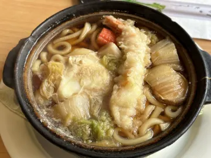
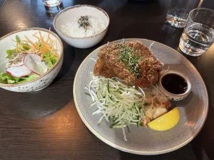
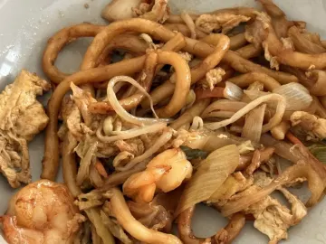
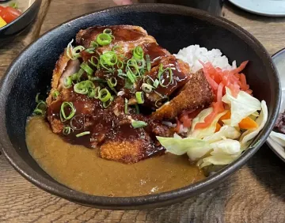
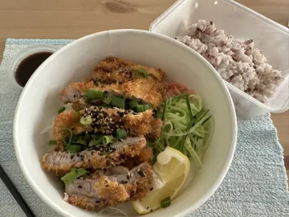
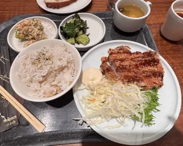

Japanese Lunch in Helsinki: Bento, Teishoku & Ramen
Finland takes lunch seriously, and so does Japan. Put the two together and Helsinki's weekday Japanese lunch is one of the best-value ways to eat well in the city. Here's what to order and how to pick a place.
How lunch works in Helsinki

Most Helsinki restaurants serve a weekday lounas (lunch) menu, typically from late morning until early afternoon, at a lower price than dinner. Japanese places are no exception, and many offer set meals that include soup, salad or sides. Hours and prices vary, so check the restaurant's own site before you go.
What to order for a Japanese lunch
- Teishoku (定食): a set meal of a main dish (grilled fish, tonkatsu, karaage) with rice, miso soup and small sides. It's the most authentic everyday lunch you can get.
- Bento: the same idea in a box, great for takeaway.
- Donburi: one bowl, done in ten minutes. See our katsudon and gyudon guide.
- Ramen: perfect on a winter weekday. See the best ramen in Helsinki.
- Sushi lunch sets: an assorted plate (moriawase) at a lunch price.
- Japanese curry (karē raisu): mild, thick and comforting, often with a tonkatsu on top.
Tips for a better Japanese lunch
- Go early. Small counters fill up fast around noon.
- Order the teishoku if you want the most authentic experience at the lowest price.
- Try a different dish each visit and keep track of which ones you'd order again.
From the Savory Scores data
Top-rated Japanese lunch dishes in Helsinki
| Photo | Dish | Restaurant | Score | Authenticity | Ratings | Last rated |
|---|---|---|---|---|---|---|
 | Deep-fried breaded chicken (チキンカツ) | MurasakiHelsinki | 10 | 10 | 1 | Jul 2025 |
 | Nabeyaki udon | KotoHelsinki | 10 | 8 | 1 | Jul 2024 |
 | Tonkatsu | Restaurant HOKUHelsinki | 10 | 4 | 1 | Sep 2023 |
 | Fried udon noodle | Mei LinHelsinki | 9 | 4 | 1 | Jun 2025 |
 | Tonkatsu-curry | Ravintola KamomeHelsinki | 9 | 9 | 1 | Dec 2023 |
 | Tonkatsu | Kiva ravintolaHelsinki | 9 | 4 | 1 | Jun 2023 |
 | Tonkatsu | MUJI RavintolaHelsinki | 8.5 | 3 | 2 | Jul 2025 |
Based on 25 ratings at 15 places in the Helsinki area, as of October 2026. Scores and authenticity are averages out of 10. Most dishes have only one or two ratings so far, and menus change, so check the app for the live ranking. Ate somewhere that should be on this list? Rate it in Savory Scores.
How to pick today's Japanese lunch with Savory Scores
- Decide on the dish, not the restaurant. Craving tonkatsu? Search Tonkatsu and see every version in Helsinki with photos and scores.
- Check what you rated before. Your past ratings show up when you search, so you'll remember that the curry at one place was a Maybe and the katsudon was a Yeah.
- Open in Maps and go.
- Rate it after lunch, in one tap. Over a few weeks you'll have a personal Japanese lunch shortlist for the whole city.
Find your favourite in Helsinki. Savory Scores is free for iPhone and iPad: search a dish, compare every version in town, and rate it in one tap.